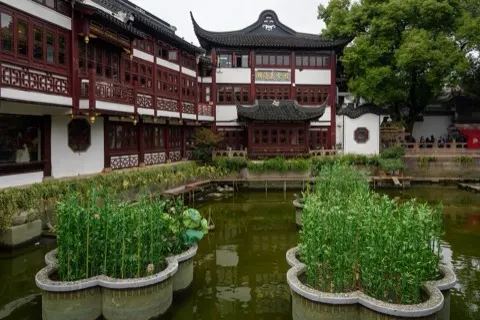

Shanghai
上海 · 沪A late-afternoon landing, the Bund as the Pudong towers come awake across the river, a hotel near the train you'll catch the day after next.

Walk 行
Bund south-to-north at dusk for the skyline waking up. Yu Garden at opening, before the tour buses. Plane-trees and lane houses along Anfu and Wulumuqi in the former French Concession.
Eat 食
Xiaolongbao at Jia Jia Tang Bao. Shengjianbao at Yang's, eaten standing. Scallion-oil noodles, red-braised pork (hong shao rou), and cong you bing pancakes from a corner stall for breakfast. Heat: low — Shanghai is the soft palate.
Fun 玩
Rooftop drinks at Bar Rouge or Vue. Speakeasies tucked behind plane-trees on Yongkang Lu. M50 art district for the warehouses. Late-night Cantonese karaoke if energy returns.
Stay 宿
Near People's Square or West Nanjing Rd — Metro lines 2 / 10 are direct to Hongqiao for the train out.